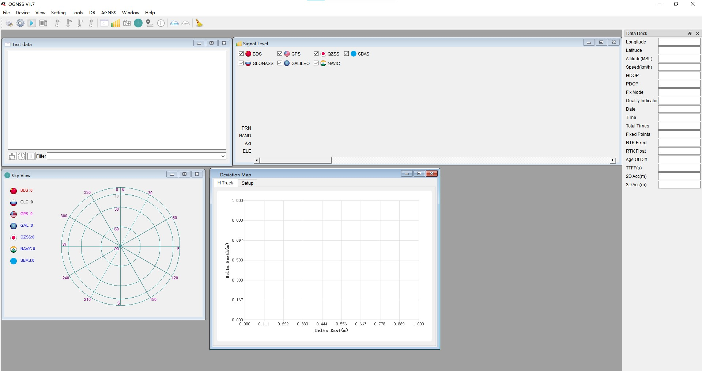
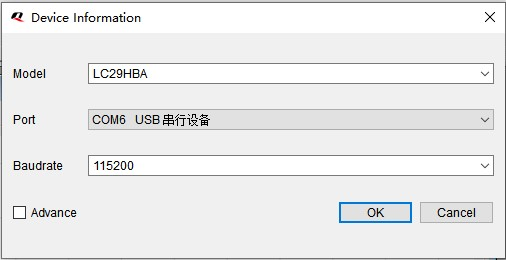
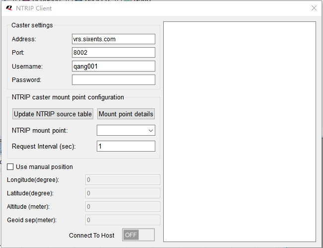
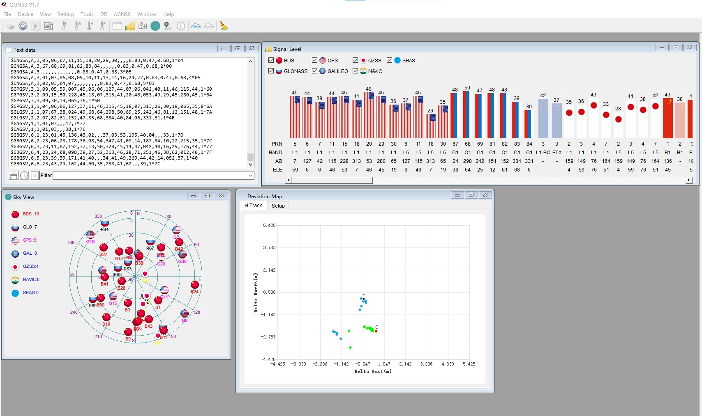

移远高精定位
测试软件：QGNSS V1.7
软件主页面
- Text data:显示当前串口的定位报文
- Signal level:卫星信号质量
- Sky View:卫星天顶图
- Deviation Map:点位图
软件连接串口
Device–>set Device Information
设置模组型号，串口号，波特率
连接定位模组
Device–>Connect
定位模组连接正常后，就能在Text data 框中看到串口发送的定位报文，软件会实时解析报文绘制定位点，分析卫星数据等。
高精度定位
Tools–>NTRIP–>NTRIP Client
- 设置高精定位服务商提供的域名，IP，账户名、密码。
- 点击Update NTRIP source table
- 在NTRIP mount point中选择挂载点
- 打开最下面的Connect To Host即可开始进行高精定位
定位效果
在Deviation Map图中蓝色的点即为普通GPS定位点，绿色点为RTK高精定位点